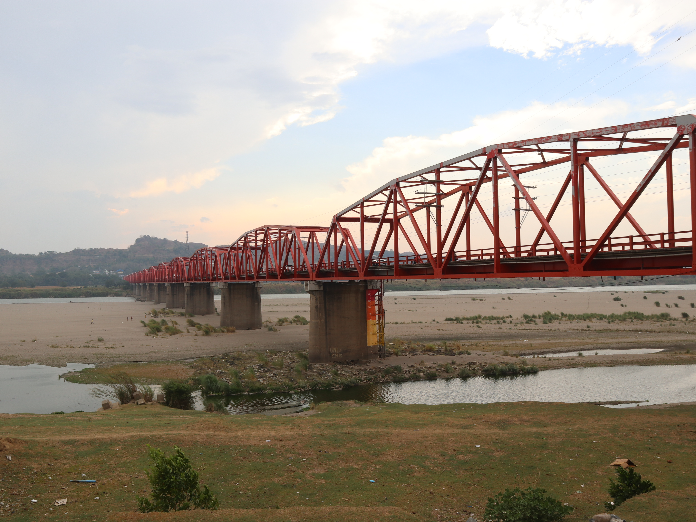

Buntun Bridge
Published on August 29, 2025
One of the longest bridges in the Philippines, Buntun Bridge spans the mighty Cagayan River and offers scenic views of the valley. A perfect spot for photography enthusiasts and tourists alike.
Travel Tips
- Visit during sunrise or sunset for amazing photos.
- Be mindful of traffic; it’s a working bridge.
- Take a leisurely walk to enjoy the river breeze.